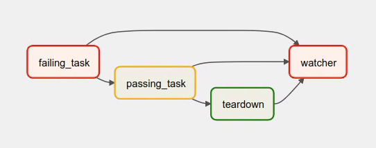

Best Practices¶
Creating a new DAG is a three-step process:
writing Python code to create a DAG object,
testing if the code meets your expectations,
configuring environment dependencies to run your DAG
This tutorial will introduce you to the best practices for these three steps.
Writing a DAG¶
Creating a new DAG in Airflow is quite simple. However, there are many things that you need to take care of to ensure the DAG run or failure does not produce unexpected results.
Creating a Custom Operator/Hook¶
Please follow our guide on custom Operators.
Creating a task¶
You should treat tasks in Airflow equivalent to transactions in a database. This
implies that you should never produce incomplete results from your tasks. An
example is not to produce incomplete data in HDFS or S3 at the end of a
task.
Airflow can retry a task if it fails. Thus, the tasks should produce the same outcome on every re-run. Some of the ways you can avoid producing a different result -
Do not use INSERT during a task re-run, an INSERT statement might lead to duplicate rows in your database. Replace it with UPSERT.
Read and write in a specific partition. Never read the latest available data in a task. Someone may update the input data between re-runs, which results in different outputs. A better way is to read the input data from a specific partition. You can use
data_interval_startas a partition. You should follow this partitioning method while writing data in S3/HDFS as well.The Python datetime
now()function gives the current datetime object. This function should never be used inside a task, especially to do the critical computation, as it leads to different outcomes on each run. It’s fine to use it, for example, to generate a temporary log.
Tip
You should define repetitive parameters such as connection_id or S3 paths in default_args rather than declaring them for each task.
The default_args help to avoid mistakes such as typographical errors. Also, most connection types have unique parameter names in
tasks, so you can declare a connection only once in default_args (for example gcp_conn_id) and it is automatically
used by all operators that use this connection type.
Deleting a task¶
Be careful when deleting a task from a DAG. You would not be able to see the Task in Graph View, Grid View, etc making it difficult to check the logs of that Task from the Webserver. If that is not desired, please create a new DAG.
Communication¶
Airflow executes tasks of a DAG on different servers in case you are using Kubernetes executor or Celery executor.
Therefore, you should not store any file or config in the local filesystem as the next task is likely to run on a different server without access to it — for example, a task that downloads the data file that the next task processes.
In the case of Local executor,
storing a file on disk can make retries harder e.g., your task requires a config file that is deleted by another task in DAG.
If possible, use XCom to communicate small messages between tasks and a good way of passing larger data between tasks is to use a remote storage such as S3/HDFS.
For example, if we have a task that stores processed data in S3 that task can push the S3 path for the output data in Xcom,
and the downstream tasks can pull the path from XCom and use it to read the data.
The tasks should also not store any authentication parameters such as passwords or token inside them. Where at all possible, use Connections to store data securely in Airflow backend and retrieve them using a unique connection id.
Top level Python Code¶
You should avoid writing the top level code which is not necessary to create Operators and build DAG relations between them. This is because of the design decision for the scheduler of Airflow and the impact the top-level code parsing speed on both performance and scalability of Airflow.
Airflow scheduler executes the code outside the Operator’s execute methods with the minimum interval of
min_file_process_interval seconds. This is done in order
to allow dynamic scheduling of the DAGs - where scheduling and dependencies might change over time and
impact the next schedule of the DAG. Airflow scheduler tries to continuously make sure that what you have
in DAGs is correctly reflected in scheduled tasks.
Specifically you should not run any database access, heavy computations and networking operations.
One of the important factors impacting DAG loading time, that might be overlooked by Python developers is that top-level imports might take surprisingly a lot of time and they can generate a lot of overhead and this can be easily avoided by converting them to local imports inside Python callables for example.
Consider the two examples below. In the first example, DAG will take an additional 1000 seconds to parse
than the functionally equivalent DAG in the second example where the expensive_api_call is executed from the context of its task.
Not avoiding top-level DAG code:
import pendulum
from airflow import DAG
from airflow.decorators import task
def expensive_api_call():
print("Hello from Airflow!")
sleep(1000)
my_expensive_response = expensive_api_call()
with DAG(
dag_id="example_python_operator",
schedule=None,
start_date=pendulum.datetime(2021, 1, 1, tz="UTC"),
catchup=False,
tags=["example"],
) as dag:
@task()
def print_expensive_api_call():
print(my_expensive_response)
Avoiding top-level DAG code:
import pendulum
from airflow import DAG
from airflow.decorators import task
def expensive_api_call():
sleep(1000)
return "Hello from Airflow!"
with DAG(
dag_id="example_python_operator",
schedule=None,
start_date=pendulum.datetime(2021, 1, 1, tz="UTC"),
catchup=False,
tags=["example"],
) as dag:
@task()
def print_expensive_api_call():
my_expensive_response = expensive_api_call()
print(my_expensive_response)
In the first example, expensive_api_call is executed each time the DAG file is parsed, which will result in suboptimal performance in the DAG file processing. In the second example, expensive_api_call is only called when the task is running and thus is able to be parsed without suffering any performance hits. To test it out yourself, implement the first DAG and see “Hello from Airflow!” printed in the scheduler logs!
Note that import statements also count as top-level code. So, if you have an import statement that takes a long time or the imported module itself executes code at the top-level, that can also impact the performance of the scheduler. The following example illustrates how to handle expensive imports.
# It's ok to import modules that are not expensive to load at top-level of a DAG file
import random
import pendulum
# Expensive imports should be avoided as top level imports, because DAG files are parsed frequently, resulting in top-level code being executed.
#
# import pandas
# import torch
# import tensorflow
#
...
@task()
def do_stuff_with_pandas_and_torch():
import pandas
import torch
# do some operations using pandas and torch
@task()
def do_stuff_with_tensorflow():
import tensorflow
# do some operations using tensorflow
How to check if my code is “top-level” code¶
In order to understand whether your code is “top-level” or not you need to understand a lot of intricacies of how parsing Python works. In general, when Python parses the python file it executes the code it sees, except (in general) internal code of the methods that it does not execute.
It has a number of special cases that are not obvious - for example top-level code also means any code that is used to determine default values of methods.
However, there is an easy way to check whether your code is “top-level” or not. You simply need to parse your code and see if the piece of code gets executed.
Imagine this code:
from airflow import DAG
from airflow.operators.python import PythonOperator
import pendulum
def get_task_id():
return "print_array_task" # <- is that code going to be executed?
def get_array():
return [1, 2, 3] # <- is that code going to be executed?
with DAG(
dag_id="example_python_operator",
schedule=None,
start_date=pendulum.datetime(2021, 1, 1, tz="UTC"),
catchup=False,
tags=["example"],
) as dag:
operator = PythonOperator(
task_id=get_task_id(),
python_callable=get_array,
dag=dag,
)
What you can do to check it is add some print statements to the code you want to check and then run
python <my_dag_file>.py.
from airflow import DAG
from airflow.operators.python import PythonOperator
import pendulum
def get_task_id():
print("Executing 1")
return "print_array_task" # <- is that code going to be executed? YES
def get_array():
print("Executing 2")
return [1, 2, 3] # <- is that code going to be executed? NO
with DAG(
dag_id="example_python_operator",
schedule=None,
start_date=pendulum.datetime(2021, 1, 1, tz="UTC"),
catchup=False,
tags=["example"],
) as dag:
operator = PythonOperator(
task_id=get_task_id(),
python_callable=get_array,
dag=dag,
)
When you execute that code you will see:
root@cf85ab34571e:/opt/airflow# python /files/test_python.py
Executing 1
This means that the get_array is not executed as top-level code, but get_task_id is.
Dynamic DAG Generation¶
Sometimes writing DAGs manually isn’t practical. Maybe you have a lot of DAGs that do similar things with just a parameter changing between them. Or maybe you need a set of DAGs to load tables, but don’t want to manually update DAGs every time those tables change. In these and other cases, it can be more useful to dynamically generate DAGs.
Avoiding excessive processing at the top level code described in the previous chapter is especially important in case of dynamic DAG configuration, which can be configured essentially in one of those ways:
via environment variables (not to be mistaken with the Airflow Variables)
via externally provided, generated Python code, containing meta-data in the DAG folder
via externally provided, generated configuration meta-data file in the DAG folder
Some cases of dynamic DAG generation are described in the Dynamic DAG Generation section.
Airflow Variables¶
Using Airflow Variables yields network calls and database access, so their usage in top-level Python code for DAGs should be avoided as much as possible, as mentioned in the previous chapter, Top level Python Code. If Airflow Variables must be used in top-level DAG code, then their impact on DAG parsing can be mitigated by enabling the experimental cache, configured with a sensible ttl.
You can use the Airflow Variables freely inside the execute() methods of the operators, but you can also pass the
Airflow Variables to the existing operators via Jinja template, which will delay reading the value until the task execution.
The template syntax to do this is:
{{ var.value.<variable_name> }}
or if you need to deserialize a json object from the variable :
{{ var.json.<variable_name> }}
In top-level code, variables using jinja templates do not produce a request until a task is running, whereas,
Variable.get() produces a request every time the dag file is parsed by the scheduler if caching is not enabled.
Using Variable.get() without enabling caching will lead to suboptimal
performance in the dag file processing.
In some cases this can cause the dag file to timeout before it is fully parsed.
Bad example:
from airflow.models import Variable
foo_var = Variable.get("foo") # AVOID THAT
bash_use_variable_bad_1 = BashOperator(
task_id="bash_use_variable_bad_1", bash_command="echo variable foo=${foo_env}", env={"foo_env": foo_var}
)
bash_use_variable_bad_2 = BashOperator(
task_id="bash_use_variable_bad_2",
bash_command=f"echo variable foo=${Variable.get('foo')}", # AVOID THAT
)
bash_use_variable_bad_3 = BashOperator(
task_id="bash_use_variable_bad_3",
bash_command="echo variable foo=${foo_env}",
env={"foo_env": Variable.get("foo")}, # AVOID THAT
)
Good example:
bash_use_variable_good = BashOperator(
task_id="bash_use_variable_good",
bash_command="echo variable foo=${foo_env}",
env={"foo_env": "{{ var.value.get('foo') }}"},
)
@task
def my_task():
var = Variable.get("foo") # this is fine, because func my_task called only run task, not scan DAGs.
print(var)
For security purpose, you’re recommended to use the Secrets Backend for any variable that contains sensitive data.
Timetables¶
Avoid using Airflow Variables/Connections or accessing airflow database at the top level of your timetable code. Database access should be delayed until the execution time of the DAG. This means that you should not have variables/connections retrieval as argument to your timetable class initialization or have Variable/connection at the top level of your custom timetable module.
Bad example:
from airflow.models.variable import Variable
from airflow.timetables.interval import CronDataIntervalTimetable
class CustomTimetable(CronDataIntervalTimetable):
def __init__(self, *args, something=Variable.get("something"), **kwargs):
self._something = something
super().__init__(*args, **kwargs)
Good example:
from airflow.models.variable import Variable
from airflow.timetables.interval import CronDataIntervalTimetable
class CustomTimetable(CronDataIntervalTimetable):
def __init__(self, *args, something="something", **kwargs):
self._something = Variable.get(something)
super().__init__(*args, **kwargs)
Triggering DAGs after changes¶
Avoid triggering DAGs immediately after changing them or any other accompanying files that you change in the DAG folder.
You should give the system sufficient time to process the changed files. This takes several steps. First the files have to be distributed to scheduler - usually via distributed filesystem or Git-Sync, then scheduler has to parse the Python files and store them in the database. Depending on your configuration, speed of your distributed filesystem, number of files, number of DAGs, number of changes in the files, sizes of the files, number of schedulers, speed of CPUS, this can take from seconds to minutes, in extreme cases many minutes. You should wait for your DAG to appear in the UI to be able to trigger it.
In case you see long delays between updating it and the time it is ready to be triggered, you can look at the following configuration parameters and fine tune them according your needs (see details of each parameter by following the links):
Example of watcher pattern with trigger rules¶
The watcher pattern is how we call a DAG with a task that is “watching” the states of the other tasks. Its primary purpose is to fail a DAG Run when any other task fail. The need came from the Airflow system tests that are DAGs with different tasks (similarly like a test containing steps).
Normally, when any task fails, all other tasks are not executed and the whole DAG Run gets failed status too. But
when we use trigger rules, we can disrupt the normal flow of running tasks and the whole DAG may represent different
status that we expect. For example, we can have a teardown task (with trigger rule set to TriggerRule.ALL_DONE)
that will be executed regardless of the state of the other tasks (e.g. to clean up the resources). In such
situation, the DAG would always run this task and the DAG Run will get the status of this particular task, so we can
potentially lose the information about failing tasks. If we want to ensure that the DAG with teardown task would fail
if any task fails, we need to use the watcher pattern. The watcher task is a task that will always fail if
triggered, but it needs to be triggered only if any other task fails. It needs to have a trigger rule set to
TriggerRule.ONE_FAILED and it needs also to be a downstream task for all other tasks in the DAG. Thanks to
this, if every other task will pass, the watcher will be skipped, but when something fails, the watcher task will be
executed and fail making the DAG Run fail too.
Note
Be aware that trigger rules only rely on the direct upstream (parent) tasks, e.g. TriggerRule.ONE_FAILED
will ignore any failed (or upstream_failed) tasks that are not a direct parent of the parameterized task.
It’s easier to grab the concept with an example. Let’s say that we have the following DAG:
from datetime import datetime
from airflow import DAG
from airflow.decorators import task
from airflow.exceptions import AirflowException
from airflow.operators.bash import BashOperator
from airflow.utils.trigger_rule import TriggerRule
@task(trigger_rule=TriggerRule.ONE_FAILED, retries=0)
def watcher():
raise AirflowException("Failing task because one or more upstream tasks failed.")
with DAG(
dag_id="watcher_example",
schedule="@once",
start_date=datetime(2021, 1, 1),
catchup=False,
) as dag:
failing_task = BashOperator(task_id="failing_task", bash_command="exit 1", retries=0)
passing_task = BashOperator(task_id="passing_task", bash_command="echo passing_task")
teardown = BashOperator(
task_id="teardown",
bash_command="echo teardown",
trigger_rule=TriggerRule.ALL_DONE,
)
failing_task >> passing_task >> teardown
list(dag.tasks) >> watcher()
The visual representation of this DAG after execution looks like this:
We have several tasks that serve different purposes:
failing_taskalways fails,passing_taskalways succeeds (if executed),teardownis always triggered (regardless the states of the other tasks) and it should always succeed,watcheris a downstream task for each other task, i.e. it will be triggered when any task fails and thus fail the whole DAG Run, since it’s a leaf task.
It’s important to note, that without watcher task, the whole DAG Run will get the success state, since the only failing task is not the leaf task, and the teardown task will finish with success.
If we want the watcher to monitor the state of all tasks, we need to make it dependent on all of them separately. Thanks to this, we can fail the DAG Run if any of the tasks fail. Note that the watcher task has a trigger rule set to "one_failed".
On the other hand, without the teardown task, the watcher task will not be needed, because failing_task will propagate its failed state to downstream task passed_task and the whole DAG Run will also get the failed status.
Using AirflowClusterPolicySkipDag exception in cluster policies to skip specific DAGs¶
New in version 2.7.
Airflow DAGs can usually be deployed and updated with the specific branch of Git repository via git-sync.
But, when you have to run multiple Airflow clusters for some operational reasons, it’s very cumbersome to maintain multiple Git branches.
Especially, you have some difficulties when you need to synchronize two separate branches(like prod and beta) periodically with proper branching strategy.
cherry-pick is too cumbersome to maintain Git repository.
hard-reset is not recommended way for GitOps
So, you can consider connecting multiple Airflow clusters with same Git branch (like main), and maintaining those with different environment variables and different connection configurations with same connection_id.
you can also raise AirflowClusterPolicySkipDag exception on the cluster policy, to load specific DAGs to DagBag on the specific Airflow deployment only, if needed.
def dag_policy(dag: DAG):
"""Skipping the DAG with `only_for_beta` tag."""
if "only_for_beta" in dag.tags:
raise AirflowClusterPolicySkipDag(
f"DAG {dag.dag_id} is not loaded on the production cluster, due to `only_for_beta` tag."
)
The example above, shows the dag_policy code snippet to skip the DAG depending on the tags it has.
Reducing DAG complexity¶
While Airflow is good in handling a lot of DAGs with a lot of task and dependencies between them, when you have many complex DAGs, their complexity might impact performance of scheduling. One of the ways to keep your Airflow instance performant and well utilized, you should strive to simplify and optimize your DAGs whenever possible - you have to remember that DAG parsing process and creation is just executing Python code and it’s up to you to make it as performant as possible. There are no magic recipes for making your DAG “less complex” - since this is a Python code, it’s the DAG writer who controls the complexity of their code.
There are no “metrics” for DAG complexity, especially, there are no metrics that can tell you whether your DAG is “simple enough”. However, as with any Python code, you can definitely tell that your DAG code is “simpler” or “faster” when it is optimized. If you want to optimize your DAGs there are the following actions you can take:
Make your DAG load faster. This is a single improvement advice that might be implemented in various ways but this is the one that has biggest impact on scheduler’s performance. Whenever you have a chance to make your DAG load faster - go for it, if your goal is to improve performance. Look at the Top level Python Code to get some tips of how you can do it. Also see at DAG Loader Test on how to asses your DAG loading time.
Make your DAG generate simpler structure. Every task dependency adds additional processing overhead for scheduling and execution. The DAG that has simple linear structure
A -> B -> Cwill experience less delays in task scheduling than DAG that has a deeply nested tree structure with exponentially growing number of depending tasks for example. If you can make your DAGs more linear - where at single point in execution there are as few potential candidates to run among the tasks, this will likely improve overall scheduling performance.Make smaller number of DAGs per file. While Airflow 2 is optimized for the case of having multiple DAGs in one file, there are some parts of the system that make it sometimes less performant, or introduce more delays than having those DAGs split among many files. Just the fact that one file can only be parsed by one FileProcessor, makes it less scalable for example. If you have many DAGs generated from one file, consider splitting them if you observe it takes a long time to reflect changes in your DAG files in the UI of Airflow.
Write efficient Python code. A balance must be struck between fewer DAGs per file, as stated above, and writing less code overall. Creating the Python files that describe DAGs should follow best programming practices and not be treated like configurations. If your DAGs share similar code you should not copy them over and over again to a large number of nearly identical source files, as this will cause a number of unnecessary repeated imports of the same resources. Rather, you should aim to minimize repeated code across all of your DAGs so that the application can run efficiently and can be easily debugged. See Dynamic DAG Generation on how to create multiple DAGs with similar code.
Testing a DAG¶
Airflow users should treat DAGs as production level code, and DAGs should have various associated tests to ensure that they produce expected results. You can write a wide variety of tests for a DAG. Let’s take a look at some of them.
DAG Loader Test¶
This test should ensure that your DAG does not contain a piece of code that raises error while loading. No additional code needs to be written by the user to run this test.
python your-dag-file.py
Running the above command without any error ensures your DAG does not contain any uninstalled dependency, syntax errors, etc. Make sure that you load your DAG in an environment that corresponds to your scheduler environment - with the same dependencies, environment variables, common code referred from the DAG.
This is also a great way to check if your DAG loads faster after an optimization, if you want to attempt to optimize DAG loading time. Simply run the DAG and measure the time it takes, but again you have to make sure your DAG runs with the same dependencies, environment variables, common code.
There are many ways to measure the time of processing, one of them in Linux environment is to
use built-in time command. Make sure to run it several times in succession to account for
caching effects. Compare the results before and after the optimization (in the same conditions - using
the same machine, environment etc.) in order to assess the impact of the optimization.
time python airflow/example_dags/example_python_operator.py
Result:
real 0m0.699s
user 0m0.590s
sys 0m0.108s
The important metrics is the “real time” - which tells you how long time it took to process the DAG. Note that when loading the file this way, you are starting a new interpreter so there is an initial loading time that is not present when Airflow parses the DAG. You can assess the time of initialization by running:
time python -c ''
Result:
real 0m0.073s
user 0m0.037s
sys 0m0.039s
In this case the initial interpreter startup time is ~ 0.07s which is about 10% of time needed to parse the example_python_operator.py above so the actual parsing time is about ~ 0.62 s for the example DAG.
You can look into Testing a DAG for details on how to test individual operators.
Unit tests¶
Unit tests ensure that there is no incorrect code in your DAG. You can write unit tests for both your tasks and your DAG.
Unit test for loading a DAG:
import pytest
from airflow.models import DagBag
@pytest.fixture()
def dagbag():
return DagBag()
def test_dag_loaded(dagbag):
dag = dagbag.get_dag(dag_id="hello_world")
assert dagbag.import_errors == {}
assert dag is not None
assert len(dag.tasks) == 1
Unit test a DAG structure: This is an example test want to verify the structure of a code-generated DAG against a dict object
def assert_dag_dict_equal(source, dag):
assert dag.task_dict.keys() == source.keys()
for task_id, downstream_list in source.items():
assert dag.has_task(task_id)
task = dag.get_task(task_id)
assert task.downstream_task_ids == set(downstream_list)
def test_dag():
assert_dag_dict_equal(
{
"DummyInstruction_0": ["DummyInstruction_1"],
"DummyInstruction_1": ["DummyInstruction_2"],
"DummyInstruction_2": ["DummyInstruction_3"],
"DummyInstruction_3": [],
},
dag,
)
Unit test for custom operator:
import datetime
import pendulum
import pytest
from airflow import DAG
from airflow.utils.state import DagRunState, TaskInstanceState
from airflow.utils.types import DagRunType
DATA_INTERVAL_START = pendulum.datetime(2021, 9, 13, tz="UTC")
DATA_INTERVAL_END = DATA_INTERVAL_START + datetime.timedelta(days=1)
TEST_DAG_ID = "my_custom_operator_dag"
TEST_TASK_ID = "my_custom_operator_task"
@pytest.fixture()
def dag():
with DAG(
dag_id=TEST_DAG_ID,
schedule="@daily",
start_date=DATA_INTERVAL_START,
) as dag:
MyCustomOperator(
task_id=TEST_TASK_ID,
prefix="s3://bucket/some/prefix",
)
return dag
def test_my_custom_operator_execute_no_trigger(dag):
dagrun = dag.create_dagrun(
state=DagRunState.RUNNING,
execution_date=DATA_INTERVAL_START,
data_interval=(DATA_INTERVAL_START, DATA_INTERVAL_END),
start_date=DATA_INTERVAL_END,
run_type=DagRunType.MANUAL,
)
ti = dagrun.get_task_instance(task_id=TEST_TASK_ID)
ti.task = dag.get_task(task_id=TEST_TASK_ID)
ti.run(ignore_ti_state=True)
assert ti.state == TaskInstanceState.SUCCESS
# Assert something related to tasks results.
Self-Checks¶
You can also implement checks in a DAG to make sure the tasks are producing the results as expected. As an example, if you have a task that pushes data to S3, you can implement a check in the next task. For example, the check could make sure that the partition is created in S3 and perform some simple checks to determine if the data is correct.
Similarly, if you have a task that starts a microservice in Kubernetes or Mesos, you should check if the service has started or not using airflow.providers.http.sensors.http.HttpSensor.
task = PushToS3(...)
check = S3KeySensor(
task_id="check_parquet_exists",
bucket_key="s3://bucket/key/foo.parquet",
poke_interval=0,
timeout=0,
)
task >> check
Staging environment¶
If possible, keep a staging environment to test the complete DAG run before deploying in the production. Make sure your DAG is parameterized to change the variables, e.g., the output path of S3 operation or the database used to read the configuration. Do not hard code values inside the DAG and then change them manually according to the environment.
You can use environment variables to parameterize the DAG.
import os
dest = os.environ.get("MY_DAG_DEST_PATH", "s3://default-target/path/")
Mocking variables and connections¶
When you write tests for code that uses variables or a connection, you must ensure that they exist when you run the tests. The obvious solution is to save these objects to the database so they can be read while your code is executing. However, reading and writing objects to the database are burdened with additional time overhead. In order to speed up the test execution, it is worth simulating the existence of these objects without saving them to the database. For this, you can create environment variables with mocking os.environ using unittest.mock.patch.dict().
For variable, use AIRFLOW_VAR_{KEY}.
with mock.patch.dict("os.environ", AIRFLOW_VAR_KEY="env-value"):
assert "env-value" == Variable.get("key")
For connection, use AIRFLOW_CONN_{CONN_ID}.
conn = Connection(
conn_type="gcpssh",
login="cat",
host="conn-host",
)
conn_uri = conn.get_uri()
with mock.patch.dict("os.environ", AIRFLOW_CONN_MY_CONN=conn_uri):
assert "cat" == Connection.get("my_conn").login
Metadata DB maintenance¶
Over time, the metadata database will increase its storage footprint as more DAG and task runs and event logs accumulate.
You can use the Airflow CLI to purge old data with the command airflow db clean.
See db clean usage for more details.
Upgrades and downgrades¶
Backup your database¶
It’s always a wise idea to backup the metadata database before undertaking any operation modifying the database.
Disable the scheduler¶
You might consider disabling the Airflow cluster while you perform such maintenance.
One way to do so would be to set the param [scheduler] > use_job_schedule to False and wait for any running DAGs to complete; after this no new DAG runs will be created unless externally triggered.
A better way (though it’s a bit more manual) is to use the dags pause command. You’ll need to keep track of the DAGs that are paused before you begin this operation so that you know which ones to unpause after maintenance is complete. First run airflow dags list and store the list of unpaused DAGs. Then use this same list to run both dags pause for each DAG prior to maintenance, and dags unpause after. A benefit of this is you can try un-pausing just one or two DAGs (perhaps dedicated test dags) after the upgrade to make sure things are working before turning everything back on.
Add “integration test” DAGs¶
It can be helpful to add a couple “integration test” DAGs that use all the common services in your ecosystem (e.g. S3, Snowflake, Vault) but with test resources or “dev” accounts. These test DAGs can be the ones you turn on first after an upgrade, because if they fail, it doesn’t matter and you can revert to your backup without negative consequences. However, if they succeed, they should prove that your cluster is able to run tasks with the libraries and services that you need to use.
For example, if you use an external secrets backend, make sure you have a task that retrieves a connection. If you use KubernetesPodOperator, add a task that runs sleep 30; echo "hello". If you need to write to s3, do so in a test task. And if you need to access a database, add a task that does select 1 from the server.
Handling conflicting/complex Python dependencies¶
Airflow has many Python dependencies and sometimes the Airflow dependencies are conflicting with dependencies that your task code expects. Since - by default - Airflow environment is just a single set of Python dependencies and single Python environment, often there might also be cases that some of your tasks require different dependencies than other tasks and the dependencies basically conflict between those tasks.
If you are using pre-defined Airflow Operators to talk to external services, there is not much choice, but usually those operators will have dependencies that are not conflicting with basic Airflow dependencies. Airflow uses constraints mechanism which means that you have a “fixed” set of dependencies that the community guarantees that Airflow can be installed with (including all community providers) without triggering conflicts. However, you can upgrade the providers independently and their constraints do not limit you, so the chance of a conflicting dependency is lower (you still have to test those dependencies). Therefore, when you are using pre-defined operators, chance is that you will have little, to no problems with conflicting dependencies.
However, when you are approaching Airflow in a more “modern way”, where you use TaskFlow Api and most of your operators are written using custom python code, or when you want to write your own Custom Operator, you might get to the point where the dependencies required by the custom code of yours are conflicting with those of Airflow, or even that dependencies of several of your Custom Operators introduce conflicts between themselves.
There are a number of strategies that can be employed to mitigate the problem. And while dealing with
dependency conflict in custom operators is difficult, it’s actually quite a bit easier when it comes to
using airflow.operators.python.PythonVirtualenvOperator or airflow.operators.python.ExternalPythonOperator
- either directly using classic “operator” approach or by using tasks decorated with
@task.virtualenv or @task.external_python decorators if you use TaskFlow.
Let’s start from the strategies that are easiest to implement (having some limits and overhead), and we will gradually go through those strategies that requires some changes in your Airflow deployment.
Using PythonVirtualenvOperator¶
This is simplest to use and most limited strategy. The PythonVirtualenvOperator allows you to dynamically
create a virtualenv that your Python callable function will execute in. In the modern
TaskFlow approach described in Working with TaskFlow. this also can be done with decorating
your callable with @task.virtualenv decorator (recommended way of using the operator).
Each airflow.operators.python.PythonVirtualenvOperator task can
have its own independent Python virtualenv (dynamically created every time the task is run) and can
specify fine-grained set of requirements that need to be installed for that task to execute.
The operator takes care of:
creating the virtualenv based on your environment
serializing your Python callable and passing it to execution by the virtualenv Python interpreter
executing it and retrieving the result of the callable and pushing it via xcom if specified
The benefits of the operator are:
There is no need to prepare the venv upfront. It will be dynamically created before task is run, and removed after it is finished, so there is nothing special (except having virtualenv package in your airflow dependencies) to make use of multiple virtual environments
You can run tasks with different sets of dependencies on the same workers - thus Memory resources are reused (though see below about the CPU overhead involved in creating the venvs).
In bigger installations, DAG Authors do not need to ask anyone to create the venvs for you. As a DAG Author, you only have to have virtualenv dependency installed and you can specify and modify the environments as you see fit.
No changes in deployment requirements - whether you use Local virtualenv, or Docker, or Kubernetes, the tasks will work without adding anything to your deployment.
No need to learn more about containers, Kubernetes as a DAG Author. Only knowledge of Python requirements is required to author DAGs this way.
There are certain limitations and overhead introduced by this operator:
Your python callable has to be serializable. There are a number of python objects that are not serializable using standard
picklelibrary. You can mitigate some of those limitations by usingdilllibrary but even that library does not solve all the serialization limitations.All dependencies that are not available in the Airflow environment must be locally imported in the callable you use and the top-level Python code of your DAG should not import/use those libraries.
The virtual environments are run in the same operating system, so they cannot have conflicting system-level dependencies (
aptoryuminstallable packages). Only Python dependencies can be independently installed in those environments.The operator adds a CPU, networking and elapsed time overhead for running each task - Airflow has to re-create the virtualenv from scratch for each task
The workers need to have access to PyPI or private repositories to install dependencies
The dynamic creation of virtualenv is prone to transient failures (for example when your repo is not available or when there is a networking issue with reaching the repository)
It’s easy to fall into a “too” dynamic environment - since the dependencies you install might get upgraded and their transitive dependencies might get independent upgrades you might end up with the situation where your task will stop working because someone released a new version of a dependency or you might fall a victim of “supply chain” attack where new version of a dependency might become malicious
The tasks are only isolated from each other via running in different environments. This makes it possible that running tasks will still interfere with each other - for example subsequent tasks executed on the same worker might be affected by previous tasks creating/modifying files etc.
You can see detailed examples of using airflow.operators.python.PythonVirtualenvOperator in
Taskflow Virtualenv example
Using ExternalPythonOperator¶
New in version 2.4.
A bit more involved but with significantly less overhead, security, stability problems is to use the
airflow.operators.python.ExternalPythonOperator`. In the modern
TaskFlow approach described in Working with TaskFlow. this also can be done with decorating
your callable with @task.external_python decorator (recommended way of using the operator).
It requires, however, that you have a pre-existing, immutable Python environment, that is prepared upfront.
Unlike in airflow.operators.python.PythonVirtualenvOperator you cannot add new dependencies
to such pre-existing environment. All dependencies you need should be added upfront in your environment
and available in all the workers in case your Airflow runs in a distributed environment.
This way you avoid the overhead and problems of re-creating the virtual environment but they have to be prepared and deployed together with Airflow installation. Usually people who manage Airflow installation need to be involved, and in bigger installations those are usually different people than DAG Authors (DevOps/System Admins).
Those virtual environments can be prepared in various ways - if you use LocalExecutor they just need to be installed at the machine where scheduler is run, if you are using distributed Celery virtualenv installations, there should be a pipeline that installs those virtual environments across multiple machines, finally if you are using Docker Image (for example via Kubernetes), the virtualenv creation should be added to the pipeline of your custom image building.
The benefits of the operator are:
No setup overhead when running the task. The virtualenv is ready when you start running a task.
You can run tasks with different sets of dependencies on the same workers - thus all resources are reused.
There is no need to have access by workers to PyPI or private repositories. Less chance for transient errors resulting from networking.
The dependencies can be pre-vetted by the admins and your security team, no unexpected, new code will be added dynamically. This is good for both, security and stability.
Limited impact on your deployment - you do not need to switch to Docker containers or Kubernetes to make a good use of the operator.
No need to learn more about containers, Kubernetes as a DAG Author. Only knowledge of Python, requirements is required to author DAGs this way.
The drawbacks:
Your environment needs to have the virtual environments prepared upfront. This usually means that you cannot change it on the fly, adding new or changing requirements require at least an Airflow re-deployment and iteration time when you work on new versions might be longer.
Your python callable has to be serializable. There are a number of python objects that are not serializable using standard
picklelibrary. You can mitigate some of those limitations by usingdilllibrary but even that library does not solve all the serialization limitations.All dependencies that are not available in Airflow environment must be locally imported in the callable you use and the top-level Python code of your DAG should not import/use those libraries.
The virtual environments are run in the same operating system, so they cannot have conflicting system-level dependencies (
aptoryuminstallable packages). Only Python dependencies can be independently installed in those environmentsThe tasks are only isolated from each other via running in different environments. This makes it possible that running tasks will still interfere with each other - for example subsequent tasks executed on the same worker might be affected by previous tasks creating/modifying files et.c
You can think about the PythonVirtualenvOperator and ExternalPythonOperator as counterparts -
that make it smoother to move from development phase to production phase. As a DAG author you’d normally
iterate with dependencies and develop your DAG using PythonVirtualenvOperator (thus decorating
your tasks with @task.virtualenv decorators) while after the iteration and changes you would likely
want to change it for production to switch to the ExternalPythonOperator (and @task.external_python)
after your DevOps/System Admin teams deploy your new dependencies in pre-existing virtualenv in production.
The nice thing about this is that you can switch the decorator back at any time and continue
developing it “dynamically” with PythonVirtualenvOperator.
You can see detailed examples of using airflow.operators.python.ExternalPythonOperator in
Taskflow External Python example
Using DockerOperator or Kubernetes Pod Operator¶
Another strategy is to use the airflow.providers.docker.operators.docker.DockerOperator
airflow.providers.cncf.kubernetes.operators.pod.KubernetesPodOperator
Those require that Airflow has access to a Docker engine or Kubernetes cluster.
Similarly as in case of Python operators, the taskflow decorators are handy for you if you would like to use those operators to execute your callable Python code.
However, it is far more involved - you need to understand how Docker/Kubernetes Pods work if you want to use this approach, but the tasks are fully isolated from each other and you are not even limited to running Python code. You can write your tasks in any Programming language you want. Also your dependencies are fully independent from Airflow ones (including the system level dependencies) so if your task require a very different environment, this is the way to go.
New in version 2.2.
As of version 2.2 of Airflow you can use @task.docker decorator to run your functions with DockerOperator.
New in version 2.4.
As of version 2.2 of Airflow you can use @task.kubernetes decorator to run your functions with KubernetesPodOperator.
The benefits of using those operators are:
You can run tasks with different sets of both Python and system level dependencies, or even tasks written in completely different language or even different processor architecture (x86 vs. arm).
The environment used to run the tasks enjoys the optimizations and immutability of containers, where a similar set of dependencies can effectively reuse a number of cached layers of the image, so the environment is optimized for the case where you have multiple similar, but different environments.
The dependencies can be pre-vetted by the admins and your security team, no unexpected, new code will be added dynamically. This is good for both, security and stability.
Complete isolation between tasks. They cannot influence one another in other ways than using standard Airflow XCom mechanisms.
The drawbacks:
There is an overhead to start the tasks. Usually not as big as when creating virtual environments dynamically, but still significant (especially for the
KubernetesPodOperator).In case of TaskFlow decorators, the whole method to call needs to be serialized and sent over to the Docker Container or Kubernetes Pod, and there are system-level limitations on how big the method can be. Serializing, sending, and finally deserializing the method on remote end also adds an overhead.
There is a resources overhead coming from multiple processes needed. Running tasks in case of those two operators requires at least two processes - one process (running in Docker Container or Kubernetes Pod) executing the task, and a supervising process in the Airflow worker that submits the job to Docker/Kubernetes and monitors the execution.
Your environment needs to have the container images ready upfront. This usually means that you cannot change them on the fly. Adding system dependencies, modifying or changing Python requirements requires an image rebuilding and publishing (usually in your private registry). Iteration time when you work on new dependencies are usually longer and require the developer who is iterating to build and use their own images during iterations if they change dependencies. An appropriate deployment pipeline here is essential to be able to reliably maintain your deployment.
Your python callable has to be serializable if you want to run it via decorators, also in this case all dependencies that are not available in Airflow environment must be locally imported in the callable you use and the top-level Python code of your DAG should not import/use those libraries.
You need to understand more details about how Docker Containers or Kubernetes work. The abstraction provided by those two are “leaky”, so you need to understand a bit more about resources, networking, containers etc. in order to author a DAG that uses those operators.
You can see detailed examples of using airflow.operators.providers.Docker in
Taskflow Docker example
and airflow.providers.cncf.kubernetes.operators.pod.KubernetesPodOperator
Taskflow Kubernetes example
Using multiple Docker Images and Celery Queues¶
There is a possibility (though it requires a deep knowledge of Airflow deployment) to run Airflow tasks using multiple, independent Docker images. This can be achieved via allocating different tasks to different Queues and configuring your Celery workers to use different images for different Queues. This, however, (at least currently) requires a lot of manual deployment configuration and intrinsic knowledge of how Airflow, Celery and Kubernetes works. Also it introduces quite some overhead for running the tasks - there are less chances for resource reuse and it’s much more difficult to fine-tune such a deployment for cost of resources without impacting the performance and stability.
One of the possible ways to make it more useful is AIP-46 Runtime isolation for Airflow tasks and DAG parsing. and completion of AIP-43 DAG Processor Separation Until those are implemented, there are very few benefits of using this approach and it is not recommended.
When those AIPs are implemented, however, this will open up the possibility of a more multi-tenant approach, where multiple teams will be able to have completely isolated sets of dependencies that will be used across the full lifecycle of a DAG - from parsing to execution.